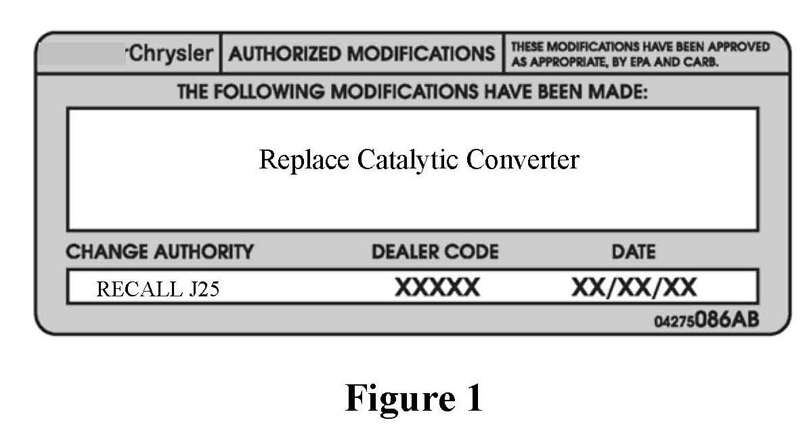

Service Procedure
WARNING:IF TORCHES ARE USED WHEN WORKING ON THE EXHAUST SYSTEM, DO NOT ALLOW THE TORCH FLAME NEAR THE FUEL LINES.
1. Raise and support the vehicle on an appropriate hoist.
2. Saturate the bolts and nuts with penetrating lubricant. Allow 5 minutes for penetration.
3. Remove the exhaust clamp from the exhaust pipe-to-catalytic converter connection.
4. Remove the exhaust clamp from the catalytic converter muffler connection.
5. Disconnect the oxygen sensor wiring.
6. Heat the exhaust pipe, catalytic converter and muffler connections with a torch until the metal becomes cherry red.
7.3While the metal is still cherry red, twist the catalytic converter back and forth to separate it from the exhaust pipe and the muffler.
8. If necessary, transfer the oxygen sensor(s) to the new catalytic converter.
9. Position the exhaust clamp over the exhaust pipe-to-catalytic converter connection.
10. Install the catalytic converter onto the exhaust pipe.
11. Install the muffler onto the catalytic converter until the alignment tab is inserted into the alignment slot.
12. Install the exhaust clamp at the muffler and catalytic converter connection. Tighten the clamp nuts to 45 ft. lbs. (61 N.m).
13. Connect the oxygen sensor wiring.
14. Lower the vehicle from the hoist.
15. Start the engine, inspect for exhaust leaks and exhaust system contact with the body panels.
16. Continue with Section B. Install the Authorized Modifications Label.
B. Install the Authorized Modifications Label:

Type or print (with a ballpoint pen) the necessary information shown in Figure 1 onto the Authorized Modifications Label. Then attach the label near the VECI label.
C. Complete Proof of Correction Form for California Residents:
This recall is subject to the State of California Registration
Renewal/Emissions Recall Enforcement Program. Complete a Vehicle
Emission Recall Proof of Correction Form (Form No. 81-016-1053) and supply
it to vehicle owners residing in the state of California for proof that this recall has been performed when they renew the vehicle registration.